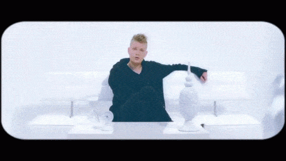
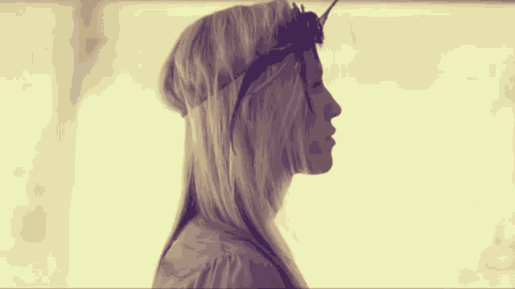

Mother Mother (originalmente solo Mother) es un grupo de 5 personas de Quadra Island en Vancouver, Canadá. Ellos iniciaron en el 2005 lanzando su albúm independientemente llamado con el mismo nombre: Mother. Después fue relanzado con canciones adicionales y se cambiaron el nombre de la banda al actual.
El resultado es una expresion original y moderna de rock, pop e indie que lo combina con nostalgia, voces agradables (y curiosas) que hacen que atrapen a las personas.
Tambien son muy cerrados con su vida personal por esto no es muy claro cual es la historia del grupo.
Discografia
Album
Mother (2005)
Touch up (2007)
Oh My Heart (2008)
Eureka (2011)
The Sticks (2012)
Very Good Bad Thing (2014)
No Culture (2017)

Integrantes
Los integrantes han hido cambiando con el tiempo a excepcion de Ryan, Debra y Molly.
Ryan Guldemond (guitarra y voz)
Molly Guldemond (sintetizador y voz)
Debra-Jean Creelman (voz)
Ali Siadat (bajo)
Jeremy Page (bajo)

Por: Kenya Navarro y Daniela Medina